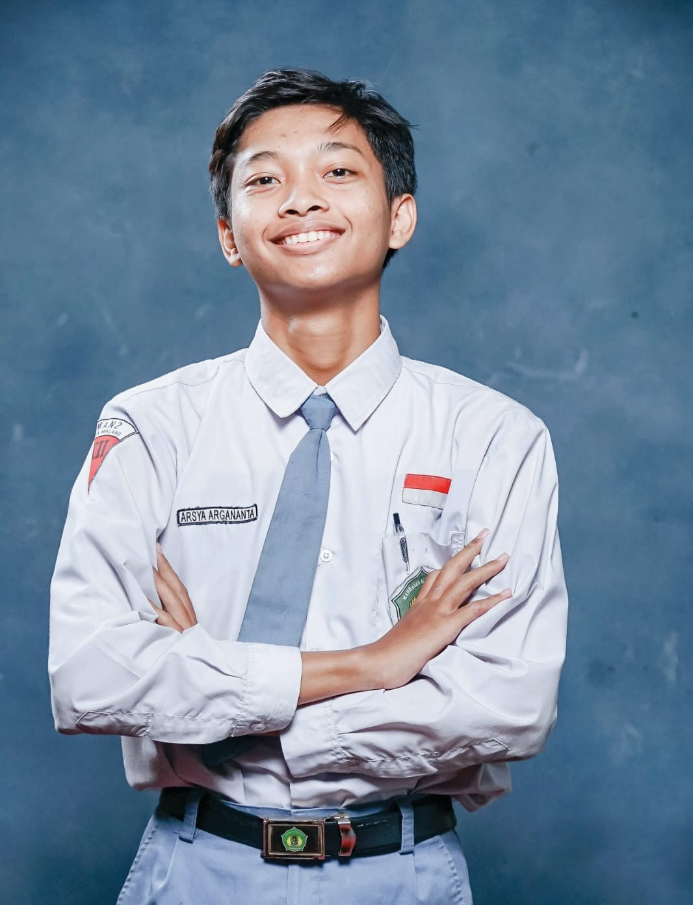

"A candle loses nothing by lighting another."
Hi! I'm Arsya Argananta, and you can call me Arga. I grew up in Malang and currently pursuing Informatics Engineering at Institut Teknologi Sepuluh Nopember, Surabaya. Since I was a kid, I've always loved mathematics and enjoyed solving problems. Even though I didn't start with extensive tech knowledge, I chose Informatics because technology is always evolving, especially for the future, and that is why I am determined to master it.
Over the past 18 months of studying informatics, I've gained valuable hands-on experience. I've learned to code in C and C++, work with PostgreSQL, operate Linux systems, and much more.